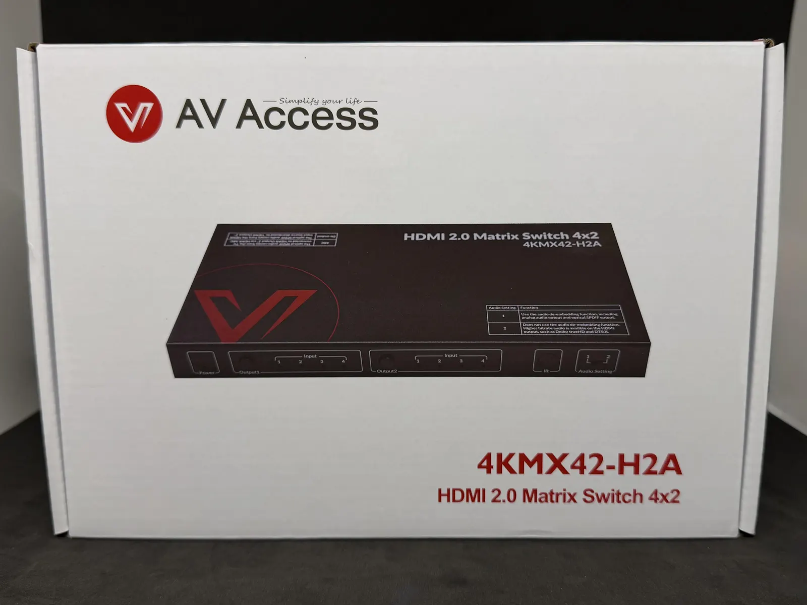
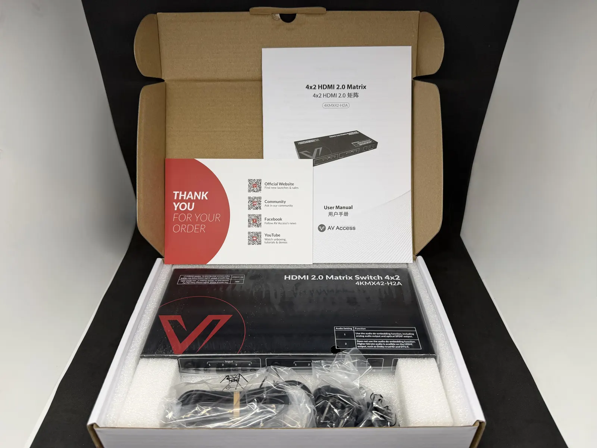
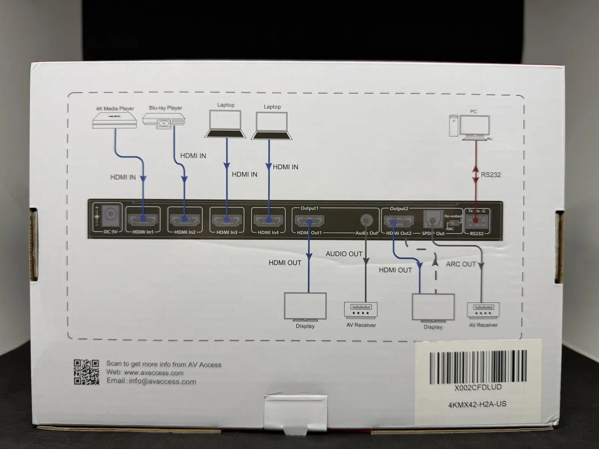
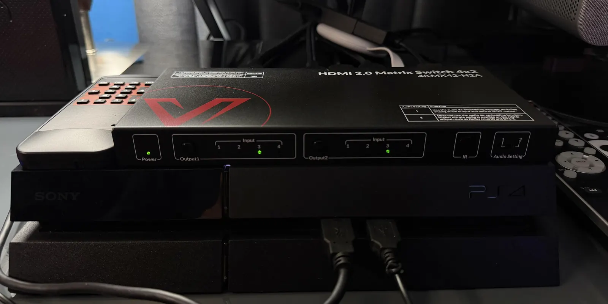
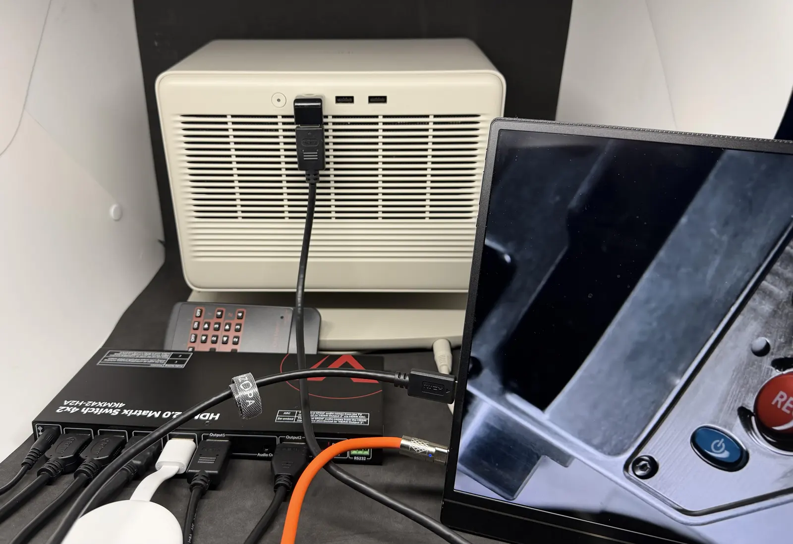
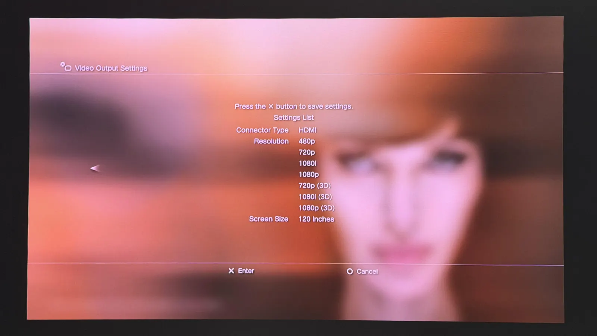
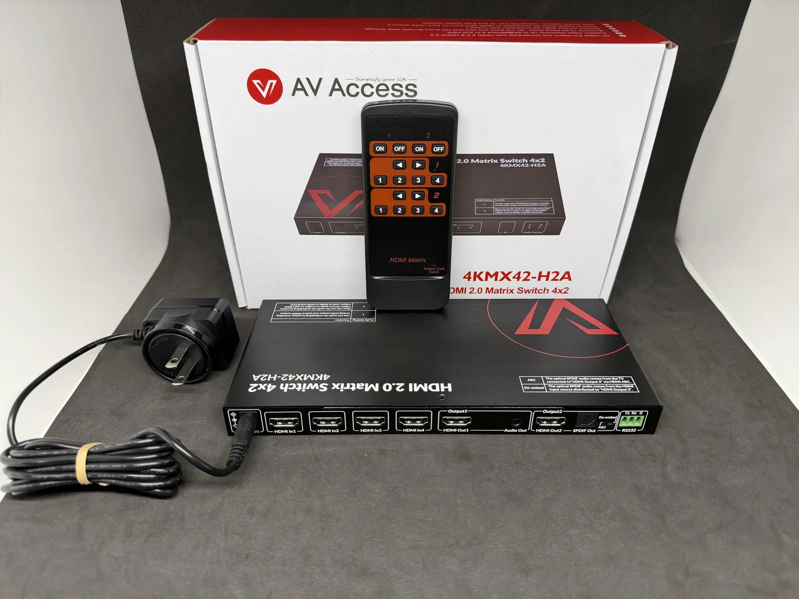

HDMI Switch Review
AV Access HDMI 2.0 Matrix Switch 4x2 (4KMX42-H2A) Review
Disclosure: As an AV Access Partner Affiliate, I earn from qualifying purchases.
Hi everyone! Today I am breaking down the AV Access HDMI 2.0 Matrix Switch 4X2 (4KMX42-H2A). Big shoutout and thank you to AV Access for reaching out and sending this over to me for a community review!
One of the most common complaints I see in the sub is that great projectors rarely have enough HDMI ports for a full media setup. Swapping cables back and forth gets old fast, and standard splitters do not give you much control. That is where a 4x2 matrix switch comes in to solve the port bottleneck while letting you route four sources across two displays independently. Let’s dive into the details and evaluate its performance.
Where to buy
Key specs
- Inputs and outputs: 4 HDMI in, 2 HDMI out, routed independently (matrix)
- Video: HDMI 2.0, 4K HDR and Dolby Vision pass through, 3D pass through
- Audio over HDMI: Dolby Atmos, DTS X, Dolby TrueHD, and multichannel LPCM pass through
- Audio extraction: SPDIF optical (up to 5.1), 3.5mm analog (2 channel PCM from Output 1), ARC on HDMI Output 2
- Downscaling: automatic 4K to 1080p per output for mixed displays
- Controls: IR remote, front panel buttons, RS232 serial (Phoenix connector)
- Build: metal chassis, passive cooling, mounting brackets included
Unboxing
Cracking open the box, AV Access gives you everything you need to get up and running right out of the package. The presentation is clean, and the hardware itself feels solid and well built. This unit definitely has some weight to it.
Here is a quick look at what is included inside:
- The HDMI Matrix Unit: The star of the show, featuring a sturdy metal housing with front panel controls.
- IR Remote Control: A dedicated remote so you can switch inputs across both outputs without getting up off the couch.
- Power Supply with Universal Adapters: A power adapter that includes swappable regional plug attachments for US, UK, EU, and AU outlets.
- Mounting Brackets and Screws: Dual mounting ears if you want to secure the switch to a rack, under a desk, or directly onto a wall behind your projector setup.
- 3 Pin Phoenix Terminal Connector: A small green adapter block for RS232 serial control setups.
- Documentation: A quick reference support card along with a detailed user manual to guide you through initial setup.
It is really nice seeing mounting hardware included right out of the box. Having those mounting ears makes cable management so much easier when you are trying to hide wires behind a media console or projector mount!


Setting Up the HDMI Matrix
Before permanently routing cables and moving the unit to its permanent placement, I always like to do a quick bench test first. I plugged in the power supply and connected four different HDMI source inputs to test each port on the switch.

My main goal for this initial test was to confirm that the matrix could send both video and audio out to two separate displays at the exact same time without dropping signal. Here is how each of my devices performed during testing:
- PlayStation 3: This is my primary source for 3D content viewing, and I did not have any issues with setting this up. The HDMI matrix was able to pass 3D information right over to the XGIMI Horizon S Max and the XGIMI Horizon 20 Max without any hitch.
- Google TV Full HD: I was able to pass a Full HD HDR signal with zero configuration issues.
- Amazon Fire TV 4K: I was able to pass through 4K SDR, HDR, and Dolby Vision to the XGIMI Horizon 20 Max with no issues at all. It also passed 4K SDR and 1080p HDR over to the Horizon S Max, as well as 4K HDR over to the BenQ TK705i.
- PlayStation 4: The matrix passed through Full HD with HDR enabled without any problems.


During all of this testing, I did not notice any input lag while navigating menus on the streaming sticks or playing games on the consoles.

Audio Capabilities and Extraction
Audio flexibility is one of the biggest reasons to use a dedicated matrix switch, especially when pairing projectors with external sound systems or soundbars. The 4KMX42 H2A gives you a few different ways to handle your sound:
- Full HDMI Audio Pass Through: If you route your HDMI outputs directly to an AV receiver or soundbar, the switch passes lossless surround formats like Dolby Atmos, DTS X, Dolby TrueHD, and multichannel LPCM.
- Digital Optical Output (SPDIF): This lets you extract digital audio from your sources directly to an external sound system or legacy receiver. It supports up to 5.1 channel surround sound including Dolby Digital and DTS 5.1.
- HDMI Out 2 ARC Support: One really cool feature is that HDMI Output 2 supports Audio Return Channel (ARC). By toggling the rear DIP switch to ARC mode, you can take audio originating from a connected TV or smart projector and send it back out through the optical SPDIF port to your sound system.
- Analog 3.5mm Output: For headphones or simple desktop speakers, there is a dedicated 3.5mm stereo jack that de-embeds 2 channel PCM audio from HDMI Output 1.

Having built in audio de-embedding makes setting up external speakers so much simpler, especially with projectors that lack high quality built in speakers or digital outputs.
Auto Downscaling and Daily Control
Beyond standard video routing and audio extraction, two key features stood out during daily testing:
- Automatic 4K to 1080p Downscaling: One common issue with standard splitters is that if you connect a 4K display and a 1080p display at the same time, the system forces both to output in 1080p. The 4KMX42 H2A handles this effortlessly with independent downscaling. It can automatically downscale a 4K input signal to 1080p for a legacy 1080p display while keeping the full 4K resolution active on your main projector.
- Remote and Front Panel Controls: Switching inputs is straightforward. You can use the physical push buttons right on the front metal panel, or use the included IR remote. The remote layout is split logically into two main sections (one for Output 1 and one for Output 2), making it easy to select inputs 1 through 4 for either screen independently.
Build Quality and Thermal Performance
- Solid Metal Construction: The unit features a durable black metal chassis that feels premium and rigid. The industrial design fits right in with higher end audio visual gear.
- Compact Form Factor: Despite offering four inputs and dual outputs along with audio extraction, the housing maintains a low profile design. This makes it easy to tuck away on a shelf, slide into a rack setup using the included mounting brackets, or mount out of sight behind a display.
- Cool Operation: Passive cooling vents along the side help dissipate internal heat. Even after several hours of continuous 4K HDR playback and gaming across multiple inputs, the unit remained only slightly warm to the touch without any performance throttling or signal drops.
Who Is This For?
The AV Access 4KMX42-H2A is a versatile piece of gear, but it really shines in a few specific setups:
- Projector Owners Running Out of Ports: If your projector only has one or two HDMI inputs, this matrix switch instantly expands your capacity to four devices. You can leave your media streamers, gaming consoles, and disc players permanently plugged in without ever having to swap cables behind your projector again.
- Home Theater Enthusiasts with External Audio or AVR Setups: If you want to feed high quality video to your display while simultaneously routing dedicated digital audio out to an AV receiver, soundbar, or legacy audio system, the built in audio extraction and ARC capabilities make integration seamless.
- Users with Dual Display Desktop or Mixed Workstations: If you share a desk space between a gaming PC, a work laptop, and secondary media sources across dual monitors or a desktop screen and TV combo, this switch lets you independently route any computer or console to either screen with the press of a button.
Final Verdict and Recommendation
If you are struggling with a limited number of HDMI ports on your projector, or trying to manage dual displays alongside external audio gear, the AV Access 4KMX42-H2A HDMI 2.0 Matrix Switch is an absolute game changer.
It handles everything you throw at it with ease, from 3D playback on consoles like the PS3 to 4K HDR and Dolby Vision streams and low lag gaming on modern consoles. Add in the automatic 1080p downscaling, flexible audio extraction with ARC support, and rock solid metal build quality, and you have a total winner for any home theater or desktop setup.
I would highly recommend this HDMI Matrix Switch for anyone looking to simplify their AV routing!
Where to buy
Disclosure: As an AV Access Partner Affiliate, I earn from qualifying purchases.
For more info or questions about this switch, or help sorting out the HDMI side of your setup, book a consultation or contact me and I'd be happy to offer some suggestions.
This review was first posted in r/BudgetProjectors.